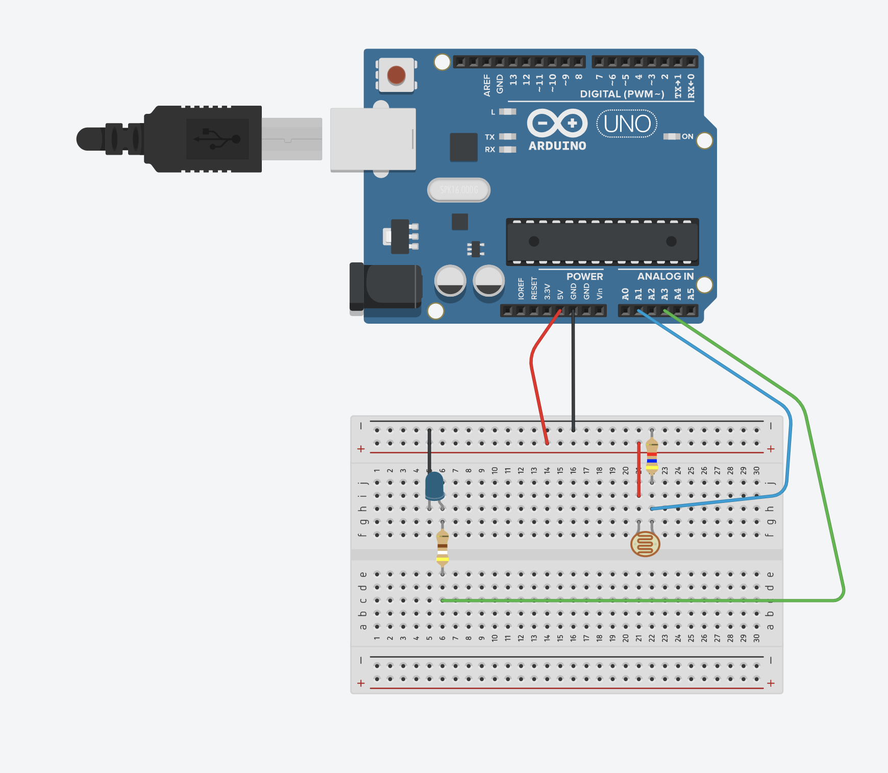
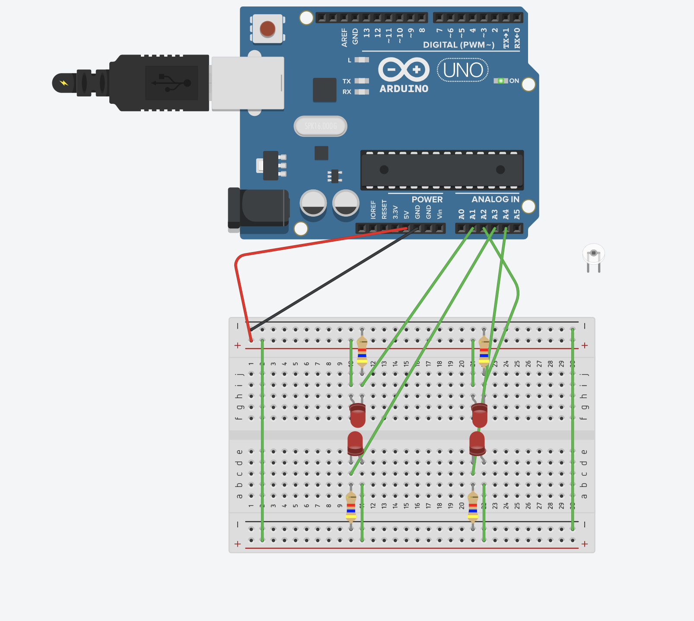
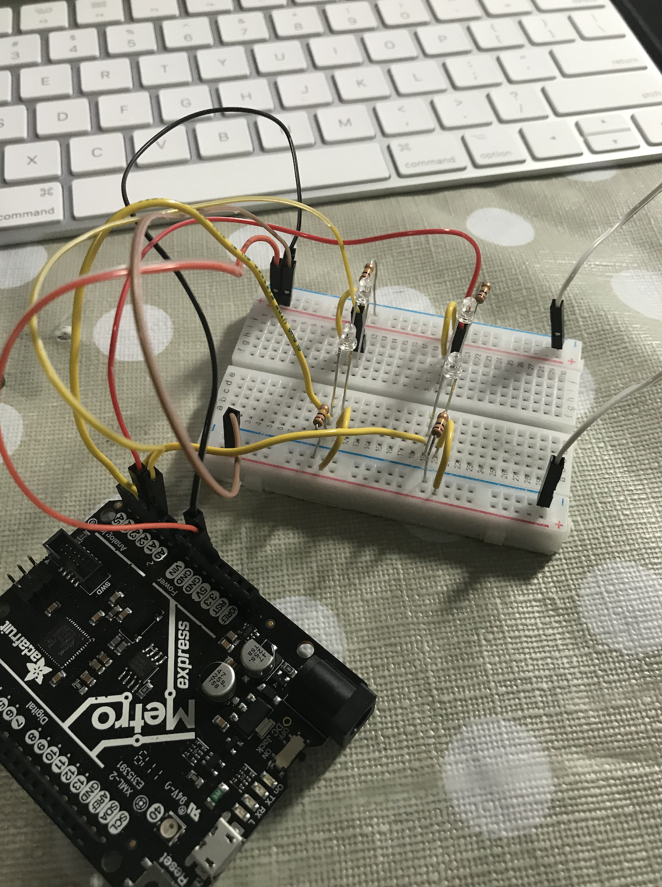
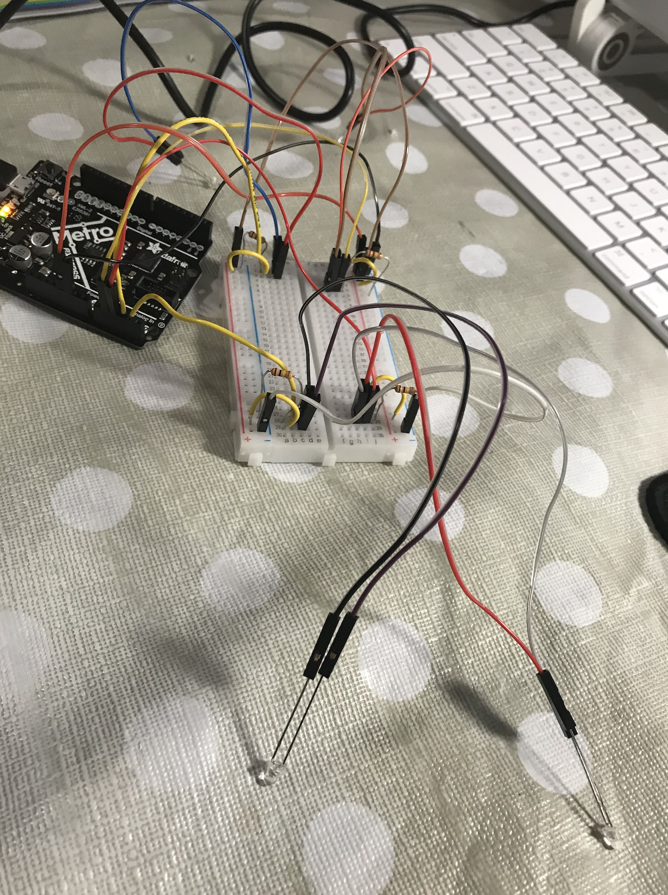
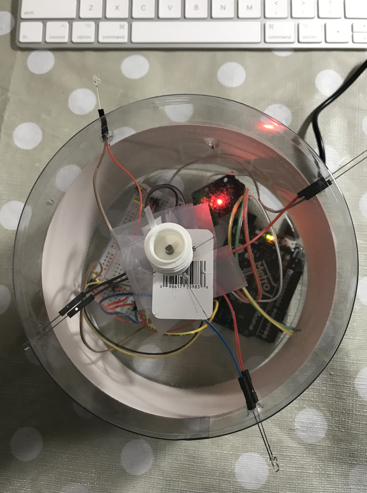

This week our task was to program a microcontroller to do something. In class we explored how to operate
the motor with the Metro Board, including how to change the direction and speed of its rotational motion.
We also continued to build on prior weeks' knowledge of the other kit parts and learned how to incorporate
them into our circuits for more advanced sensing and response.
My idea for this homework was heavily inspired by the work we did on the motors, as I saw an opportunity
to reconstruct the typically abstracted-away features of wheel motion in robots. I initially considered
working to build a PID controller from scratch in this way, but felt that there was more I could do to
incorporate other elements of the kit to produce something more novel.
I'd previously seen a video of a drone moving toward light using a camera and reinforcement learning,
and this practical application got me interested in light-driven motion. The natural tool to use for this
was the phototransistors in our kit, of which we had a total of 4 (not counting the 2 IR photo transistors).
First, I would need to understand better what a phototransistor, or even a normal transistor, did. I started by
reading this
tutorial on phototransistors.
To briefly summarize my key takeaways from this article, the phototransistor operates by converting
photons to electrons using a "reverse biased base-collector junction." The electric field generated moves
electrons into the "emitter. As a result the photodiode current is multiplied by the current gain β of
the transistor." Thus, a phototransistor essentially operates as a current amplifier, and with more current
running across the phototransistor, voltage increases. This voltage is what the pin connected to the Metro
will measure.
Another piece of knowledge I gained, which was supplemented by this
forum discussion on phototransistor sensitivity
was that the resistor connected to a phototransistor controls the flow of current. Phototransistors are not
the most sensitive or responsive, but to increase sensitivity, the resistor in the collector of the transistor should be increased
The smaller the amount of current flowing through the transistor the less light it takes to switch it. A 100kOhm resistor or more is recommended.
The down side is that the smaller the current the slower the response but for my application, this shouldn't be too crucial.
I then proceeded to find an example of a phototransistor circuit available and the associated
tutorial on how to construct and understand it.

Now, given that voltage sensing is crucial to get accurate input from phototransistors, I investigated
how best to connect them, and found that
in parallel
works best for accurate and safe readings.
I wanted to start by setting up the LEDS in parallel to ensure accurate readings, and thus built the
following circuit on TinkerCAD, not wanting to damage any phototransistors before I was certain of my
circuit (as I'd done previously with an LED).

Then I built this circuit in person and added phototransistors. The goal of this was to try to get variable
readings from each direction, and be able to sense light direction as a result. Then I could build motion
into this construction to enable a robot to move toward light.

However, an immediate challenge I realized was that light needed to hit the base of the phototransistor quite
directly. Therefore my initial idea of discerning light direction from multiple indirect readings would not
be feasible, unless the phototransistors were densely clustered, as in the above image. I did want to
eventually mount this on a robot, and for any suitable-sized bot, the phototransistors would need to be
much more spread out. Thus, I needed to decouple the phototransistors and rely on moving toward direct readings.
(i.e. move toward the sensor exhibiting the highest significant reading). For these phototransistors, it
seemed that the "resting" voltage was in the 30-40 range, so I would need to set a threshold above this to trigger
a valid response. Whether or not I would be able to implement PID control would also rely on the motor.
In the process of deciding how to mount the phototransistors properly, I realized that I would need to
somehow extend them with wire to line a robot body. I decided to use these male-to-female wires to plug
in the phototransistors and enable them to be stuck through the inside of a robot body.

From there, I attached a motor in a similar fashion as last week, sticking up through the inside of a round
container, allowing the phototransistors to stick out.

From there, I tested the motor for minimum speed, given that I wanted a limited range of motion. After
running several tests, I realized that the maximum speed for a motor would require publishing an analog
signal of 50/255 via PWM, which controls the speed of the motor. Lower speeds would result in no motion or
only occasional motion. I also needed to figure out the speed of the motor, and since speed control
seemed to scale more quickly than I'd like, I decided to use time to control the angular distance of rotation.
After performing some tests with the load I had attached to motor, I determined publishing 50 via PWM over
650ms, the motor would make one full-circle rotation. I also noted that in order to reverse the motion of
the motor to clockwise, I would need to publish 255-50 via PMW, and reverse the directional digital signal from
"LOW" to "HIGH". Thus, I had the directional control I needed to be able to rotate a flag attached to the motor
to face the direction of the stongest/last strongest light source. This could then be extended in future
weeks to actually moving the body of the robot on wheels in response to light.
A quick note before I head into further programming discussion: for anyone using MacOS BigSur and looking
to use the mu-editor to run CircuitPython, at the time of writing, it will help to run
export QT_MAC_WANTS_LAYER=1
first. Otherwise, you will, like me, get stuck with a mu-editor that becomes unresponsive immediately after opening.
I chose to program in Arduino's C++ only because I wanted to have more experience in this language. The added
challenge I realized after trying to implement more advanced data structures usually in the Standard Library
was that these packages were too large for an MCU. Therefore, I would need to rely on more basic
data structures, such as those discussed
here
to do things like find the argmax of an array, which would otherwise be one line in CircuitPython. Definitely
a good learning experience!
My code assumes that the flag starts facing the "1st" phototransitor, so between runs, I adjust accordingly.
I noticed immediately after a few runs that I would need to perform tuning adjustments to get accurate motion, especially
since the motion was not completely exact, especially when moving through different angles. The numbers I mentioned
earlier for speed and time of motor motion are the final tuned numbers. I noted that rather than moving
always clockwise, it might be better for accuracy and style to have the motor move through the minimum
angle to reach its destination. Therefore, a few additional if statements were necessary to achieve
the final product:
const int A1A = 3; // define pin 3 for A-1A (PWM Speed)
const int A1B = 4; // define pin 4 for A-1B (direction)
int lastpos = 0; // remember last position to determine next rotation angle
int pr1 = 0; // Phototransistor Value
int pr2 = 0;
int pr3 = 0;
int pr4 = 0;
const byte directions = 4;
void setup() {
pinMode(A1A, OUTPUT); // specify these pins as outputs
pinMode(A1B, OUTPUT);
digitalWrite(A1A, LOW); // start with the motors off
digitalWrite(A1B, LOW);
pinMode(A1, INPUT);
pinMode(A2, INPUT);
pinMode(A3, INPUT);
pinMode(A4, INPUT);
Serial.begin(9600);
delay(500);
}
void loop() {
// start the motor at a medium speed
pr1 = analogRead(A1); // print out for visual confirmation
Serial.print("A1 ");
Serial.println(pr1);
pr2 = analogRead(A2);
Serial.print("A2 ");
Serial.println(pr2);
pr3 = analogRead(A3);
Serial.print("A3 ");
Serial.println(pr3);
pr4 = analogRead(A4);
Serial.print("A4 ");
Serial.println(pr4);
int myMeasurements[directions]={pr1, pr2, pr3, pr4};
byte maxIndex = 0;
int maxValue = myMeasurements[maxIndex];
for(byte i = 1; i < directions; i++)
{
if(myMeasurements[i] > maxValue) {
maxValue = myMeasurements[i];
maxIndex = i;
}
}
float angle = (maxIndex*90)- (lastpos*90);
float rotateTime = 0;
if (maxValue > 50 && maxIndex != lastpos){
Serial.println(maxIndex);
Serial.println(angle);
if (angle < 0) {
if (angle > -180){
analogWrite(A1A, 50); // min reliable speed; CCW
digitalWrite(A1B, LOW);
rotateTime = 650 * (-angle / 360);
delay(rotateTime);
}
else {
analogWrite(A1A, 205); // min reliable speed ; CW
digitalWrite(A1B, HIGH);
rotateTime = 650 * ((angle + 360) / 360);
delay(rotateTime);
}
}
else {
if (angle <= 180){
analogWrite(A1A, 205);
digitalWrite(A1B, HIGH);
rotateTime = 650 * (angle / 360);
delay(rotateTime);
}
else {
analogWrite(A1A, 50);
digitalWrite(A1B, LOW);
rotateTime = 650 * ((360-angle) / 360);
delay(rotateTime);
}
}
lastpos = maxIndex;
analogWrite(A1A, 0);
digitalWrite(A1B, LOW);
}
}